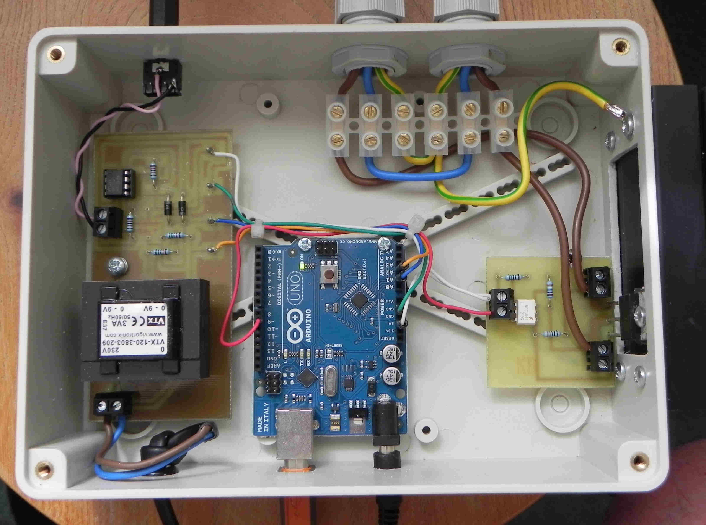

I have a mr2 pv router which I purchased from "richmc", which was ready built. I recently had a power cut and it stopped working !
I finally sorted out how to re-program the "arduino uno" with blink and reloaded the pv- router-mini and got it working. However, I have lost the original. INO file. I am not sure what to reload to get it to work as it did originally.
Could someone please advise as what I should do.
Many thanks
Phill
Re: mk2-pv-router ino file
Rich is back on these forums, so I hope he'll see this and respond.
Re: mk2-pv-router ino file
I did leave him a message about a week ago and got no response thats why i put it out to the forum
many thanks
phill
Re: mk2-pv-router ino file
The system doesn't send emails (it's a long-standing bug) so PM me or revive this thread if Rich doesn't respond, and I'll do some checking for you.
Re: mk2-pv-router ino file
thanks Robert for letting me know
phill
Re: mk2-pv-router ino file
Hi Phill,
As far as I'm aware, Rich would have used my original Mk2 sketch, namely Mk2_PV_Router.ino. Soon after this, I released a simplified version, Mk2_PV_Router_mini.ino, which works in the same way. Both sketches are on my Summary Page. Although not the latest versions, those original (greyed out) sketches should still work as intended. Maybe some of the IO port numbers need to be changed?
If you're still stuck, send me a PM and I'm sure we'll be able to get your system working again soon.
Robin
Re: mk2-pv-router ino file
Robin, would Phill be better to go with your latest, changing I/O allocations if necessary to suit Rich's boards? (I very nearly wrote that I thought any of your sketches would work given those changes might be necessary.)
Re: mk2-pv-router ino file
Hi. I'm really not sure what I am doing with this pv router. I have tried to load your file from mk2 pv router controller with triac. Is this the same file, as it would not download? It kept coming up with downloading errors.
I'm not really up to date with programming, so any advice would be great.
Can you clarify "PM".
Many thanks
Phill
Re: mk2-pv-router ino file
"PM" means Private Message. Click on Robin's name, his profile will appear and at the bottom "Send this user a private message". Follow your nose from there!
"Is this the same file, as it would not download?" Do you mean download from this website onto your computer, or load into your Router? What error messages did you see?
Here are the zipped files that you need (one or the other, your choice. Robin advises the second simpler one.):
http://openenergymonitor.org/emon/sites/default/files/Mk2_PV_Router.ino_.zip
http://openenergymonitor.org/emon/sites/default/files/Mk2_PV_Router_mini_2.ino_.zip
It is a Zip file that you download from here, so you need to unzip it to get a file called "Mk2_PV_Router.ino", (or "Mk2_PV_Router_mini.ino") and it's that which you open with the Arduino IDE and load into your router.
Re: mk2-pv-router ino file
Can you clarify "PM".
"Private Message". I'll send you one which should appear as Message[1] at the upper RHS of your forum screen. Then we can sort this out on a 1:1 basis.
Thanks for the suggestion Robert, I'm not sure either how Rich configured the complete systems that he supplied.
Re: mk2-pv-router ino file
Robin, would Phill be better to go with your latest, changing I/O allocations if necessary to suit Rich's boards?
Robert, as far as I'm aware, all Mk2 sketches of mine on the forum have used the same IO ports as for the emonTx V2, i.e. analog 2 for the voltage sensor and analog 1 for the 'grid' current. So no changes should be needed if a later sketch is used. For Mk2i rev6, which supports a second current sensor, I've used analog 0.
From the photo of Rich's own Mk2 system, the connecting wires appear to be just plugged into the IO port strips of the Arduino. As expected, only A1 and A2 have wires connected to them:

For my own PCB, I've reallocated these port IDs to improve the layout, so the equivalent sketches on my website reflect this change. For use with an emonTx V3, the port IDs would need to be changed again.
Re: mk2-pv-router ino file
This is the same router as I have got but the Arduino board has the reset button to the left next to the usb port at the bottom and a Removable chipset all connections are the same
thanks phill